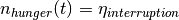
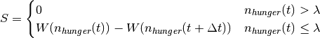

eat module¶
This module contains information about the activities associated with eating. This class is an activity.Activity that gives a person.Person the ability to eat and satisfy the need hunger.Hunger.
This module contains the following classes:
eat.Eat(general eating capabilities)eat.Eat_Breakfast(eating breakfast)eat.Eat_Lunch(eating lunch)eat.Eat_Dinner(eating dinner)
Module author: Dr. Namdi Brandon
-
class
eat.Eat[source]¶ Bases:
activity.ActivityThis class has general capabilities that allow the person to eat in order to satisfy
hunger.Hunger. This class acts as a parent class and is expected to inherited.-
advertise(p)[source]¶ This function handles advertising the score to an agent. This function returns 0.
Note
This function should be overloaded when inherited.
Parameters: p (person.Person) – the person of interest Returns: the score (0) Return type: float
-
advertise_help(p, dt)[source]¶ This function does some of the logistics needed for
advertise().This function does the following:
- sets the suggested recharge rate for hunger
- calculates the score
Parameters: - p (person.Person) – the person who is being advertised to
- dt (float) – the duration of the activity
Returns: the score
Return type: float
-
advertise_interruption(p)[source]¶ This function calculates the score of an activity advertisement when a person is going to interrupt an ongoing activity in order to do an eating activity.
This function does the following:
- temporarily sets the satiation of hunger 
- calculate the score advertised for the potential eating activity that will interrupt a current activity
- restores the the satiation for hunger to the original value
Parameters: p (person.Person) – the person of interest Return score: the value of the advertisement Return type: float
-
end(p)[source]¶ This function ends the eat activity.
Parameters: p (person.Person) – the person whose activity is ending Returns: None
-
end_meal(p)[source]¶ This function ends the eat activity by doing the following.
- frees the person’s use of the asset
- sets the state to idle (
state.IDLE) - sets the satiation of hunger
- set the current meal for the next day
- set any skipped meals to be on the next day
- find the the next meal
- sets the decay rate of hunger
- update the scheduler so that hunger will trigger the schedule to stop at the next meal
- set the next meal to the current meal
Parameters: p (person.Person) – The person whose meal is ending. Returns: None
-
set_end_time(p)[source]¶ This function returns the end time of eating (universal time).
Parameters: p (person.Person) – the person of interest. Return t_end: the end time of eating [minutes, universal time] Return type: int
-
start(p)[source]¶ This function starts the eating activity.
Parameters: p (person.Person) – The person whose activity is starting. Returns: None
-
start_meal(p)[source]¶ This function starts the eat activity by doing the following.
- sets the person’s state to busy (
state.BUSY) - set the decay rate of hunger to 0
- store the start time to the state
- sets the end time
- sets the hunger recharge rate
- updates the asset’s state and number of users
- update the schedule for the hunger need to trigger when the eat activity is scheduled to end
Parameters: p (person.Person) – the person who is starting the meal Returns: None - sets the person’s state to busy (
-
-
class
eat.Eat_Breakfast[source]¶ Bases:
eat.EatThis class is used to handle the logistics for eating breakfast.
-
advertise(p)[source]¶ This function calculates the score of an activities advertisement to a person.
Advertise to the agent if the following conditions are met
- the current meal is breakfast
- the agent’s location is at home (
location.HOME) - calculate the score

Parameters: p (person.Person) – the person of interest Return score: the advertised score of doing the eat breakfast activity Return type: float
-
end_meal(p)[source]¶ This function handles the logistics for ending the eat activity by doing the following.
- call
eat.end_meal() - If planning to skip lunch, update the lunch event to be the next day
Parameters: p (person.Person) – the person who’s meal is ending Returns: - call
-
start_meal(p)[source]¶ This function handles the logistics for starting the eat activity by doing the following
- set the current meal to breakfast
- call
eat.start_meal()
Parameters: p (person.Person) – the person who is starting the eat activity Returns:
-
-
class
eat.Eat_Dinner[source]¶ Bases:
eat.EatThis class is used to handle the logistics for eating dinner.
-
advertise(p)[source]¶ This function calculates the score of an activities advertisement to a Person.
Advertise to the agent if the following conditions are met
- the current meal is lunch
- the agent’s location is at home (
location.HOME) - calculate the score
If the threshold is not met, score is 0. The advertisements assume that the duration of the activity is the mean duration.
Parameters: p (person.Person) – The person of interest Return score: the advertised score of doing the Eat activity Return type: float
-
end_meal(p)[source]¶ This function goes through the logistics of ending the dinner meal by doing the following:
- calls
end.end_meal() - If breakfast will be skipped, update the lunch event to be 2 days from the current day
Parameters: p (person.Person) – the person who is finishing the eating dinner event Returns: None - calls
-
start_meal(p)[source]¶ This function goes through the logistics of starting the dinner meal by doing the following:
- set the current meal to dinner
- call
eat.start_meal()
Parameters: p (person.Person) – the person who is starting the eat dinner event Returns: None
-
-
class
eat.Eat_Lunch[source]¶ Bases:
eat.EatThis class is used to handle the logistics for eating lunch.
-
advertise(p)[source]¶ This function calculates the score of an activities advertisement to a person.
Advertise to the agent if the following conditions are met
- the current meal is lunch
- the agent’s location is at home (
location.HOME) or the agent’s location is at the workplace (location.OFF_SITE) - calculate the score
If the threshold is not met, score is 0. The advertisements assume that the duration of the activity is the mean duration.
Parameters: p (person.Person) – The person of interest Return score: the advertised score of doing the Eat activity Return type: float
-
end_meal(p)[source]¶ This function ends the eat activity by doing the following:
- calls
eat.end_meal() - if dinner is to be skipped, update the dinner event by doing the following:
- if the lunch is an interrupting activity
- set the time until the next lunch activity
- update the schedule for the interruption to the next lunch activity
- set the interruption state to False
Parameters: p (person.Person) – The person whose meal is ending. Returns: None - calls
-
start_meal(p)[source]¶ This function handles the logistics for starting the eat activity by doing the following:
- sets the current meal to lunch
- call
eat.start_meal()
Parameters: p (person.Person) – the person starting the eat lunch event Returns: None
-